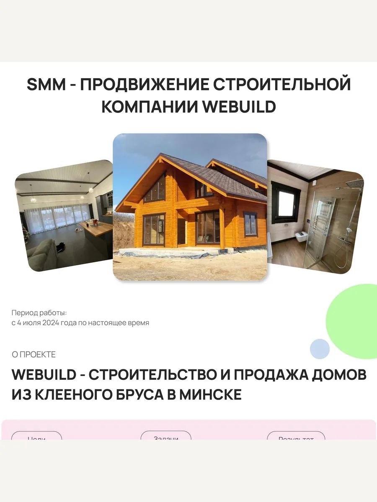
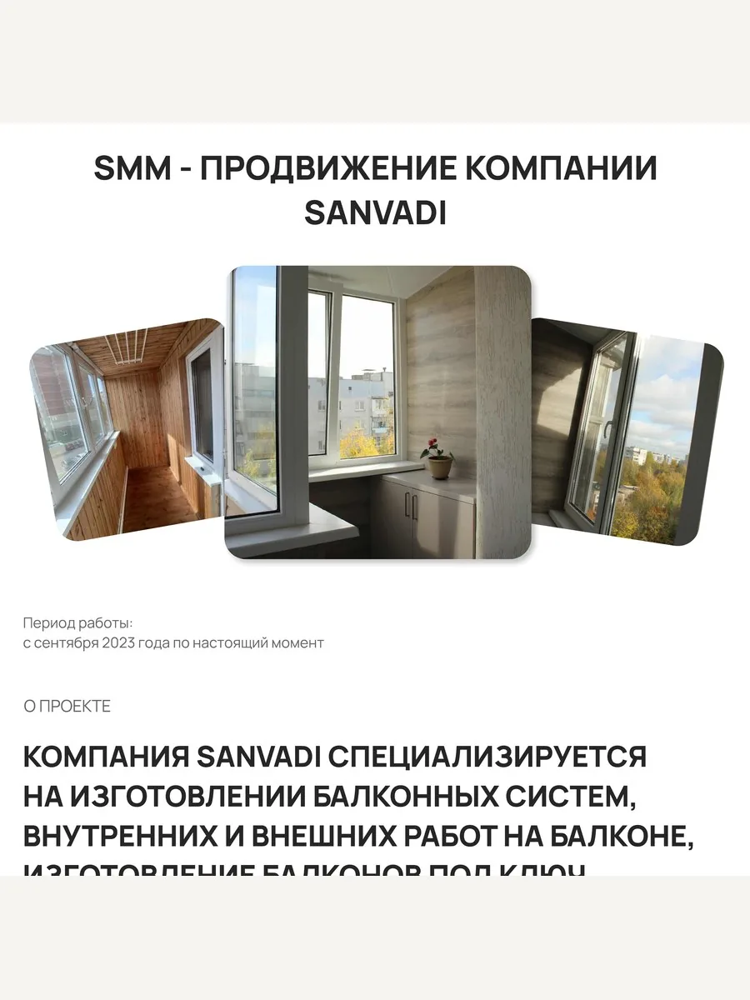
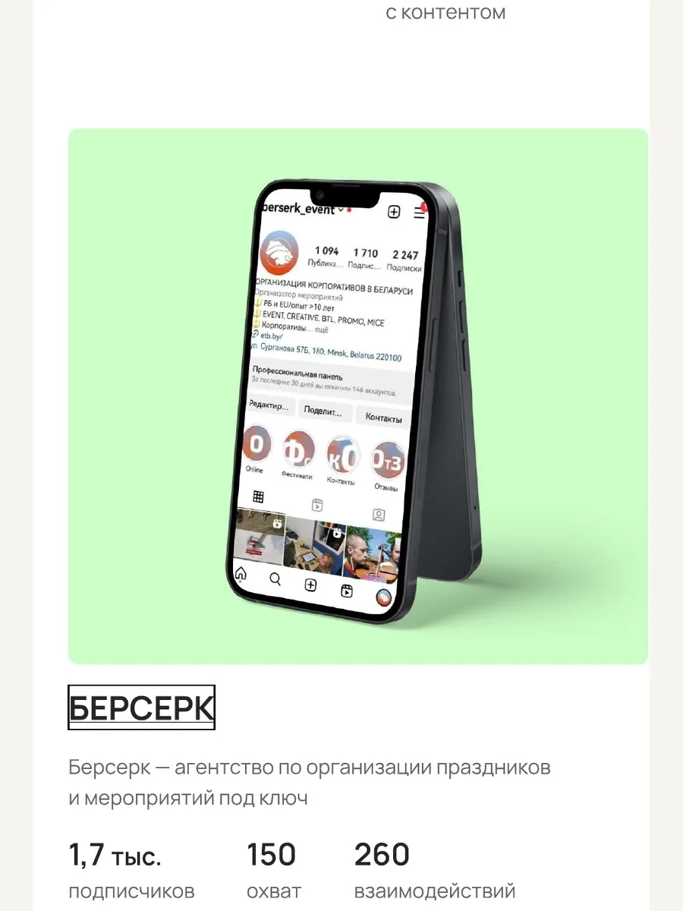

Стратегия и план
Разбираемся в продукте и аудитории, приводим профиль в порядок и составляем рубрики, которые отвечают на реальные вопросы клиентов.
 SMM И КОНТЕНТ / 03
SMM И КОНТЕНТ / 03
Показываем продукт, команду и процесс так, чтобы человеку было проще понять вашу ценность и сделать следующий шаг.
Обсудить SMMВедение без согласования — от 500 BYN в месяц. Под ключ с согласованием публикаций — 750 BYN. Площадки и объём контента выбираем под вашу задачу.
ЧТО ДЕЛАЕМ
Планируем темы и форматы так, чтобы соцсети помогали продавать и отвечать на вопросы до первого контакта.
Разбираемся в продукте и аудитории, приводим профиль в порядок и составляем рубрики, которые отвечают на реальные вопросы клиентов.
Готовим тексты, визуалы и публикации. Для коротких видео предлагаем темы и сценарии, которые можно снять без сложного продакшена.
Смотрим, какие темы вызывают интерес и обращения, и корректируем план, а не просто закрываем календарь публикаций.
Ведение без согласования — 500 BYN в месяц. Под ключ с согласованием — 750 BYN. Съёмки, производство сложного видео и платное продвижение рассчитываем отдельно.
КЕЙСЫ ПО SMM
Задачи и метрики перенесены из предоставленных коммерческих материалов.

SMM · МИНСК
Продвижение компании по строительству и продаже домов из клеёного бруса.
Упаковка профиля, живой фото- и видеоконтент, Reels, хэштеги, геотеги и таргетированная реклама.

SMM · ВИТЕБСК
Продвижение компании по изготовлению балконных систем и балконов под ключ.
Переупаковка профиля, контент с реальными объектами, Reels, хэштеги и геотеги.

SMM
Агентство по организации праздников и мероприятий.
Подключим нужное направление отдельно или соберём связку под вашу задачу.
НАЧНЁМ С ЗАДАЧИ
Предложим площадки, темы и формат ведения: от 500 BYN в месяц.